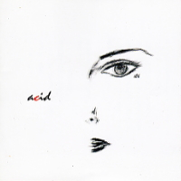

acid
名義：t2k
(Vo)津久井克行(Ba)渡辺禎士
(Pi)大山泰輝によるバンド
(Vo)津久井克行(Ba)渡辺禎士
(Pi)大山泰輝によるバンド
-
01. 空の続き
作詞：小林 和子 作曲：津久井 克行
-
02. いつでもふたり
作詞：津久井 克行 作曲：安曇 公亮 編曲：富田素弘
-
03. 奇妙な果実
作詞：津久井 克行 作曲：斎藤 誠
-
04. 愛のかけら
作詞：池永 康記 作曲：荒木 真木彦
-
05. MAY（SELF cover）
作詞：津久井 克行 作曲：津久井 克行 編曲：斎藤 誠
-
06. Rainy Day（SELF cover）
作詞：松本 一起 作曲：北村 勝彦 編曲：十川 知司